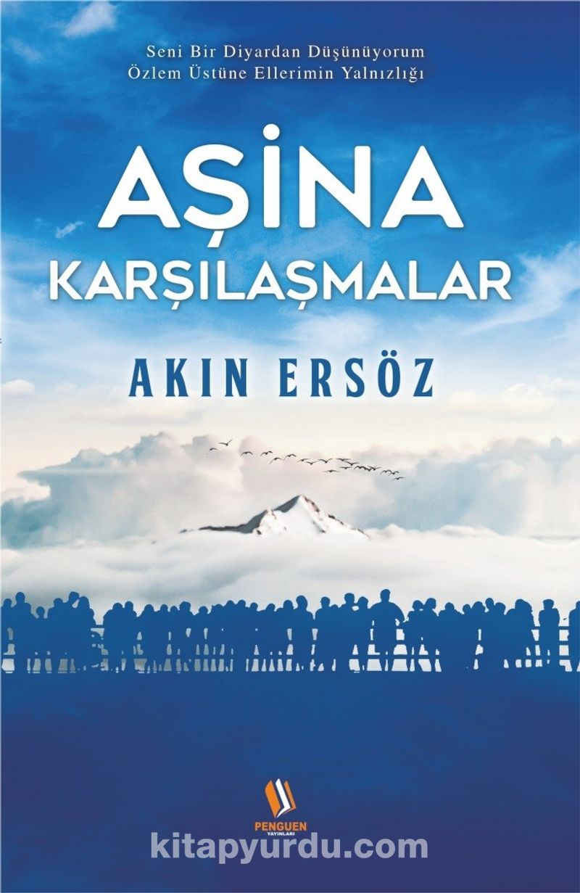
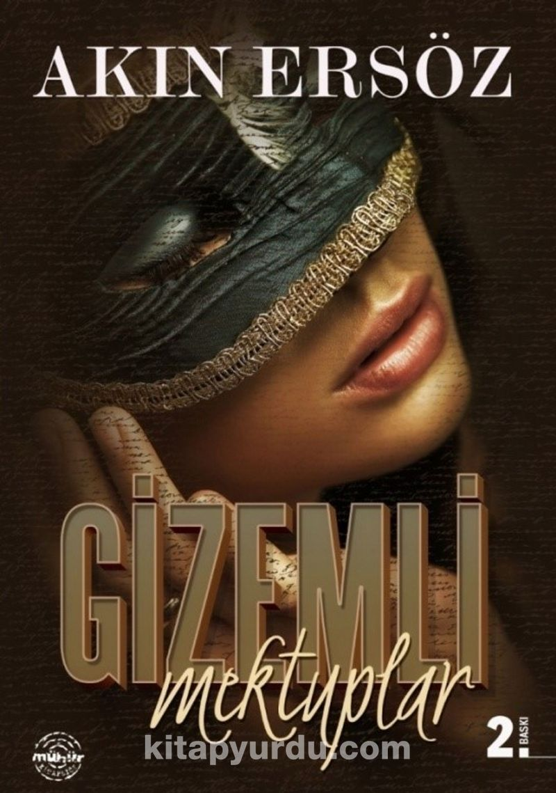
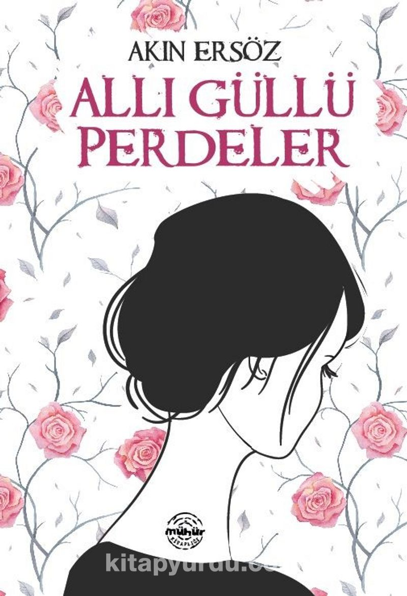

Aşina Karşılaşmalar
"Tanımak istediğimde güller açmamıştı bahçede; gittiğinde mevsim güzdü, göremedim yitenleri. Yanıyordu bedenim, parlak bir günde ıslanmışken. Bir yerlerde sesler duydum. Kan çanağı gözlerim düş mü gördü, yoksa yaşadım mı, bilemiyorum."

Gizemli Mektuplar
“Hep planladığım ama her nedense ertelediğim sabah yürüyüşünden döndüğümde buldum bu zarfı posta kutusunda.Sabahın ilk saatleri postacı gelmeyeceği için "yanlışlıkla bırakılmıştır" diye düşündüm. Zarfın üzerinde ad ve adres yoktu. Bana ait olmayan ama benim posta kutumdan çıkan bu gizemli zarfı istemeden de olsa açtım. İçinden iki mektup çıktı.Bir zarftan çıkan iki mektup…”

Allı Güllü Perdeler
"Tanımak istediğimde
Güller açmamıştı bahçemde
Gittiğinde
Mevsim güzdü
Göremedim yitenleri
O zaman pencereyi açtığında karşı evin
allı güllü perdelerini görürdü.
Uzaklarda çok uzaklarda kalan
denizin kokusunu çekerdi içine.
‘Denizsiz bir kentte yaşayamam herhalde.’ derdi
her soluk alışında.
Ya şimdi?”